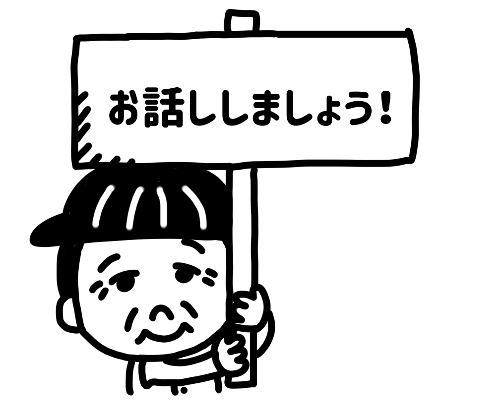
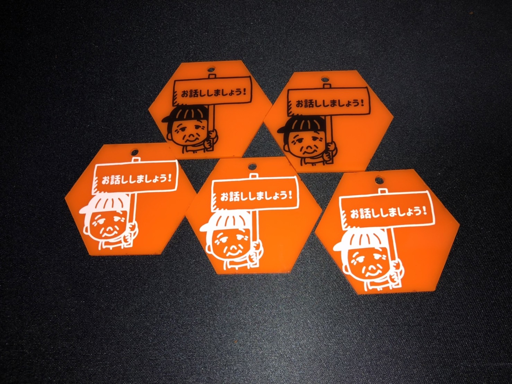

問題
今回の課題はグループで担当を分けて作品を制作しました。今回問題として挙げたのは、「バスで声をかけてくるおじいちゃん」です。

周りの人がバスに静かに乗っていたい時に、自分のしたことや最近の話題をどんどん話しかけてくるおじいちゃんなのですが、
周囲の人や実際声をかけられたことのある私は少しめんどくさいと思ってしまい、この問題を取り上げました。
私たちは、おじいちゃんとの会話がどのようにしたらめんどくさいと感じなくなるのか。
また、おじいちゃん自身が声をかける人を考えて、声をかけれるようになるのかと言うところに視点をおいて、
この問題を解決するための作品制作に取り組みました。
制作
作品を作るにあたって、どのような形にすれば使いやすく分かりやすいのかと言うところから話し合いました。身体に身につけるものか、持ち運ぶカバンなど付けれるものか、一層のこと洋服にしてみるかなどの意見が出ましたが、
最終的にカバンなどにつけることのできる、キーホルダーの形にすることにしました。
イラストは自分が担当して、このようになりました。

完成品
土台の部分を結晶の形にして冬を表現しました。
スタンドの木の部分は自分でデザインするのが難しく、サイトを参考にしながらFusion360で作りました。
dxfファイルはこちらです。
スタンド 結晶
制作するにあたって
この作品を製作しようと思ったきっかけが、自宅のアクセサリーを保管するのにお洒落なスタンドが欲しいと思っていたことです。小さいものから大きいものまで掛けたりすることのできるアクセサリースタンドが欲しいと思い、製作することにしました。
しかし、ただのアクセサリースタンドではお店に売っているものと変わらない。自分が作る意味を考え季節をテーマにし、この作品にしました。
感想
初めに書いたものは複雑なデザインにしてしまったため、テーマを絞って製作したことが今回の良かった点だと思った。実際に使用してみたら、少し高さが低かったためか、ネックレスをかけると下についてしまう。
使うものの大きさを測ってから製作したらもっといいものができたのかもしれないと思った。
トップページに戻る